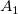

積分 ツールは、台形公式を使用してアクティブデータプロットに数値積分を実行します。数学的面積 (台形の代数的総計) または 絶対値面積 (絶対台形値の総計)を選択できます。欠損値がある場合無視されます。
integ1 Xファンクションが呼び出されて計算を実行します。結果の面積、ピークの位置、ピーク幅、ピーク高さ(X軸からの最大の振れ) を結果ログに出力するオプションを利用できます。さらに、曲線の両端を結んだシンプルなベースラインを使用して積分を実行するか選んだり、積分曲線をプロットするか選択できます。
| 結果ログの出力 | 面積、ピーク位置、ピーク幅、ピーク高さを結果ログに出力するかどうか選択します。 |
|---|---|
| 再計算 |
分析結果の再計算を制御します。
詳細は、こちらを確認してください：分析結果の再計算 |
| 入力 |
積分する入力データを指定します。 範囲制御についてはこちらを確認してください：入力データを指定する |
| 最終ポイントでの直線を基線に使用 |
最終ポイントを横切る直線を作成し、それを積分計算の基線として用いるかを指定します。 |
| 領域の種類 |
積分領域の種類を指定します。詳細については、以下のアルゴリズムのセクションをご覧下さい。
|
| 出力する値 |
積分結果 ボックス(下図)にチェックを入れて、出力する内容を指定します。
Note: X値の始まりと終わり及び積分面積は、出力する値、Xの開始、 Xの終了 及び 面積 が可能になっているかに関係なく、積分結果列のコメント行に出力されます。 |
| 積分曲線のデータ |
累積結果の範囲を指定します。 |
| 積分結果 |
レポートシートに積分の結果を出力するかどうかを指定します。 |
| 積分曲線をプロット |
積分曲線を作図するかどうか指定し、プロットする場合はどこにプロットするか指定します。
|
| ソースグラフの再スケール |
積分曲線をプロットするときにソースグラフを再スケールするか指定します。このオプションは積分曲線をプロットがソースグラフに指定されているときに使用できます。 |
数値積分の考え方として、近似関数による定積分を計算します。
元のデータは離散しているので、2つの隣接する点を使って、近似する台形を作ります。
上図のように曲線を断片に分け、各台形の合計を計算し、以下によって積分を計算します。
![\int _{x_1}^{x_n}f(x)dx \approx \sum _{i=1}^{n-1}( x_{i+1} -x_i) \frac{1}{2}[f(x_{i+1})+f(x_i)]](../images/Integrate/math-02e1de68d6e5a54203ad7578c5a02844.png "\int _{x_1}^{x_n}f(x)dx \approx \sum _{i=1}^{n-1}( x_{i+1} -x_i) \frac{1}{2}[f(x_{i+1})+f(x_i)]")
基線が \!") であるとき、 の数学的面積は以下のように計算できます。
であるとき、 の数学的面積は以下のように計算できます。
![\int _{x_1}^{x_n} \left[f \left( x \right)-f \left( x_0 \right) \right] \,dx \approx \sum _{i=1}^{n-1} \frac{1}{2} \left( x_{i+1} -x_i \right) \left[ \left( f \left( x_{i+1} \right) -f \left( x_0 \right) \right) + \left( f \left( x_i \right) -f \left( x_0 \right) \right) \right]](../images/Integrate/math-a25d330f4319359dc2e20213e8096e19.png "\int _{x_1}^{x_n} \left[f \left( x \right)-f \left( x_0 \right) \right] \,dx \approx \sum _{i=1}^{n-1} \frac{1}{2} \left( x_{i+1} -x_i \right) \left[ \left( f \left( x_{i+1} \right) -f \left( x_0 \right) \right) + \left( f \left( x_i \right) -f \left( x_0 \right) \right) \right]")
各台形面積絶対値の合計が計算された場合、絶対値面積となります。
![\int _{x_1}^{x_n} | \left[f \left( x \right)-f \left( x_0 \right) \right] | \,dx \approx \sum _{i=1}^{n-1} \frac{1}{2} \left( x_{i+1} -x_i \right) | \left[ \left( f \left( x_{i+1} \right) -f \left( x_0 \right) \right) + \left( f \left( x_i \right) -f \left( x_0 \right) \right) \right] |](../images/Integrate/math-2c032ecbce6257d0ec1dfd6f4510b0ad.png "\int _{x_1}^{x_n} | \left[f \left( x \right)-f \left( x_0 \right) \right] | \,dx \approx \sum _{i=1}^{n-1} \frac{1}{2} \left( x_{i+1} -x_i \right) | \left[ \left( f \left( x_{i+1} \right) -f \left( x_0 \right) \right) + \left( f \left( x_i \right) -f \left( x_0 \right) \right) \right] |")
上図のように、基線 で曲線が5つの台形(もしくは三角形)に分割されています。各台形(もしくは三角形)の面積は以下によって計算されます。
![A_i = \frac{1}{2} \left( x_{i+1} -x_i \right) \left[ \left( f \left( x_{i+1} \right) -f \left( x_0 \right) \right) + \left( f \left( x_i \right) -f \left( x_0 \right) \right) \right]](../images/Integrate/math-741a03a31a9c340fc809dbde0bfd9d03.png "A_i = \frac{1}{2} \left( x_{i+1} -x_i \right) \left[ \left( f \left( x_{i+1} \right) -f \left( x_0 \right) \right) + \left( f \left( x_i \right) -f \left( x_0 \right) \right) \right]")
式から、ベースラインより上の 、 、 は正ですが、ベースラインより下の、
、 は正ですが、ベースラインより下の、 は負となります。
は負となります。
従って、この曲線の数学的面積は、 で表され、絶対値面積は、
で表され、絶対値面積は、 で表されます。
で表されます。